LE RETOUR.
Retour au plus haut niveau, podium dès la première Coupe d’Europe, vice-champion de France U23 et 4e du Championnat d’Europe.
BMX RACING — ÉLITE
ROAD TO 2032
D’une première sortie en BMX à 4 ans à mon passage en catégorie Élite, mon parcours s’est construit étape après étape, avec une ambition qui n’a cessé de grandir.
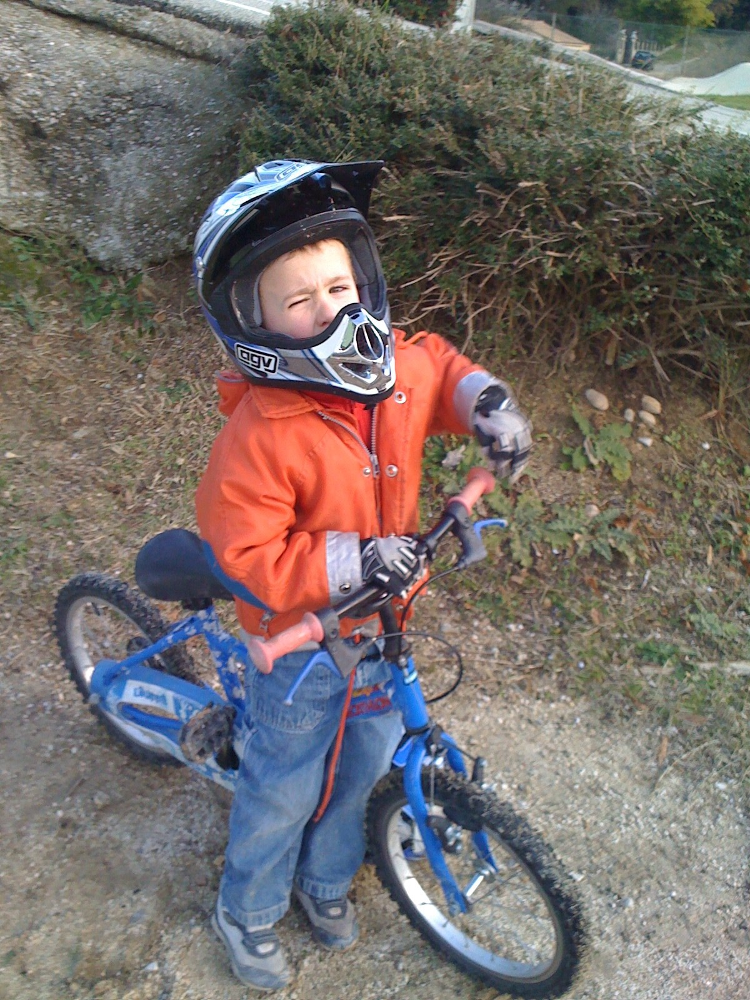
En 2008, à 4 ans, je découvre le BMX au club de Saint-Paul-Trois-Châteaux avec mon frère jumeau Charles.
À cet âge-là, il n’y a évidemment ni objectif de haut niveau, ni championnat du monde en tête. Juste l’envie de rouler, de s’amuser et de recommencer le week-end suivant.
Je ne le savais pas encore, mais près de vingt ans plus tard, le BMX ferait toujours partie de ma vie.
À 14 ans, le BMX change de dimension. Après un premier hiver de préparation structuré, j’aborde les Coupes de France avec une autre ambition et je découvre progressivement le niveau européen.
En 2018, je décroche mes premières victoires nationales. Je remporte plusieurs manches de Coupe de France, le classement général ainsi que le Challenge France. Cette saison marque également mes premières finales européennes.
En 2019, je termine 6e du classement général de la Coupe de France Cadet, premier pilote de mon âge, puis 6e du Championnat d’Europe et 3e du Championnat du Monde.
À la fin de la saison 2019, j’intègre le Pôle France Jeune de Bourges. Le BMX devient un projet de haut niveau.
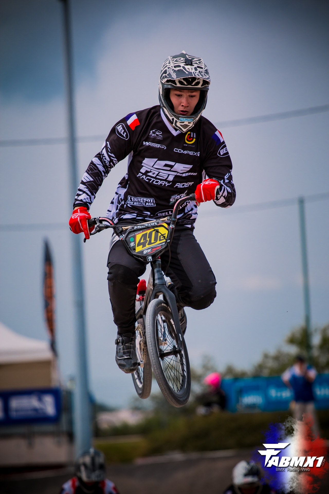
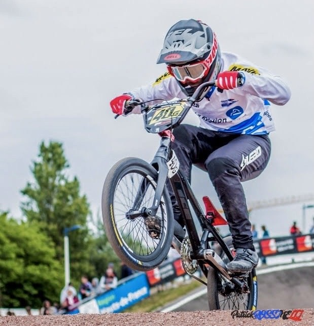
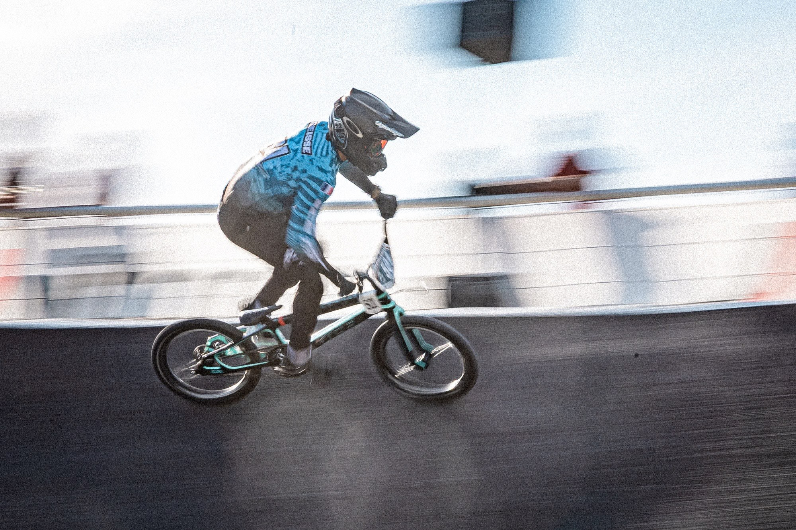
Après plusieurs années sur le circuit national, l’intégration au Pôle France change ma manière de travailler. L’entraînement devient quotidien, structuré, et chaque détail commence à compter.
Les années Junior confirment cette progression : champion de France du contre-la-montre en 2021, puis double champion de France Junior en 2022. Cette même année, je termine 5e du Championnat d’Europe et 6e du Championnat du Monde.
Début 2023, des douleurs au dos deviennent progressivement incompatibles avec l’entraînement et la compétition. Malgré une qualification pour les Championnats du Monde, je dois finalement renoncer à prendre le départ.
Après plusieurs mois d’examens, une malformation osseuse lombaire congénitale est identifiée. Elle nécessite une opération, suivie de huit mois de convalescence.
Cette blessure m’oblige surtout à gagner très vite en maturité sportive. Elle change ma manière d’aborder l’entraînement, la récupération et plus largement ma carrière.
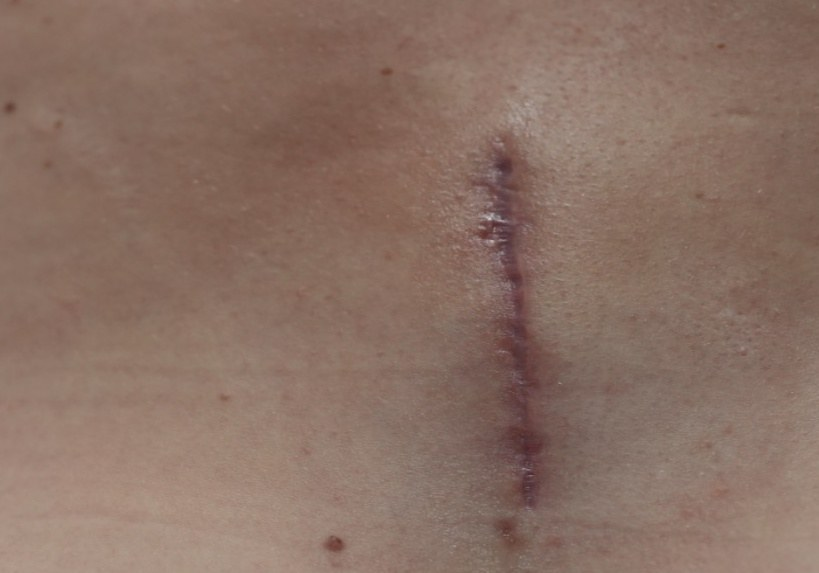
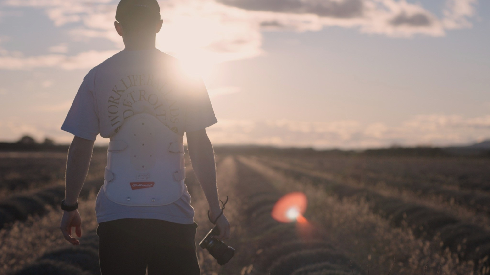
Retour au plus haut niveau, podium dès la première Coupe d’Europe, vice-champion de France U23 et 4e du Championnat d’Europe.
Finale dès la première Coupe d’Europe Élite, premiers podiums en Coupe de France Élite et qualification pour les Championnats du Monde à Brisbane.
Une nouvelle catégorie. Le même projet : construire des références internationales et progresser course après course.
Le passage Élite ouvre le chapitre qui compte le plus : transformer les résultats internationaux en une trajectoire olympique.
Podium en Coupe d’Europe.
Qualification et finale au Mondial.
Être dans la course à la qualification olympique.
Arriver au meilleur niveau pour réaliser une performance.
France, Europe et Monde : un calendrier construit autour des Coupes de France, Coupes d’Europe, Coupes du Monde et Championnats.
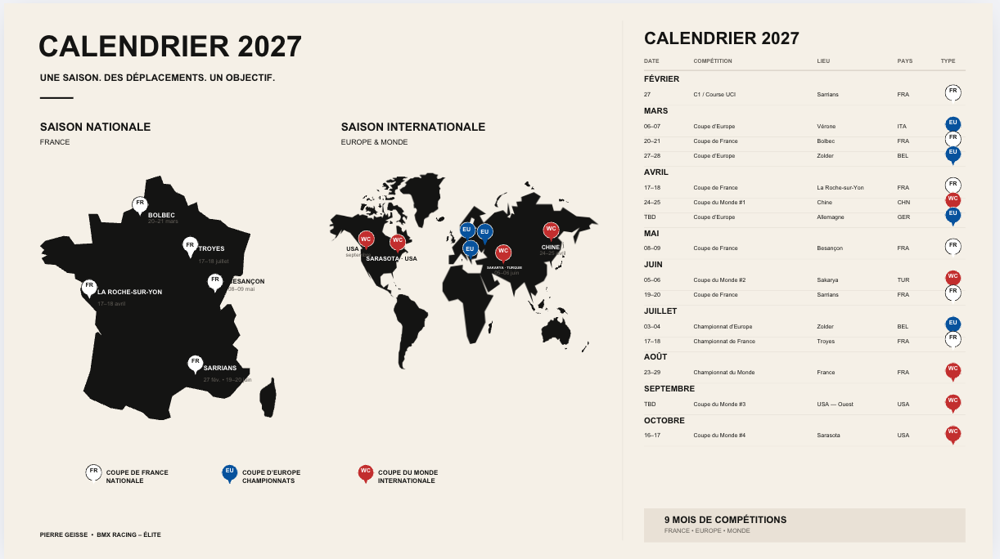
Le très haut niveau a un coût. Derrière chaque week-end de course se trouvent des mois d’entraînement, du matériel spécifique et des déplacements internationaux de plusieurs jours.
Vols, route, hébergements et logistique des compétitions nationales et internationales.
Vélos, pièces, pneus, consommables et renouvellement du matériel de compétition.
Coaching, programmation, nutrition, CrossFit, pistes et déplacements d’entraînement.
Derrière ma saison et mes objectifs sportifs, il y a un projet qui ne peut pas se construire seul. Je souhaite rencontrer des entreprises qui veulent prendre part à cette aventure.
Chaque partenariat peut être différent : soutien financier, dons en nature, visibilité, communication, création de contenu ou actions au sein de votre entreprise.
Une base simple. Les contreparties exactes sont construites avec chaque partenaire.
Présence partenaire
Communication digitale
Visibilité renforcée
Contenus & actualités
Activation dédiée
Présence événementielle
Collaboration sur mesure
Contenus photo / vidéo
Toutes les entreprises n’ont pas forcément un lien naturel avec le BMX. C’est précisément là que mon activité de photographe et vidéaste peut apporter une vraie valeur au partenariat.
En parallèle de ma carrière sportive, je produis du contenu photo et vidéo. Je peux donc imaginer avec un partenaire des contenus directement utiles à son entreprise : présenter un produit, valoriser un savoir-faire, couvrir un événement ou créer des formats adaptés aux réseaux sociaux.
Tous les contenus sont créés sur mesure pour s’adapter aux besoins et à l’identité de votre entreprise.
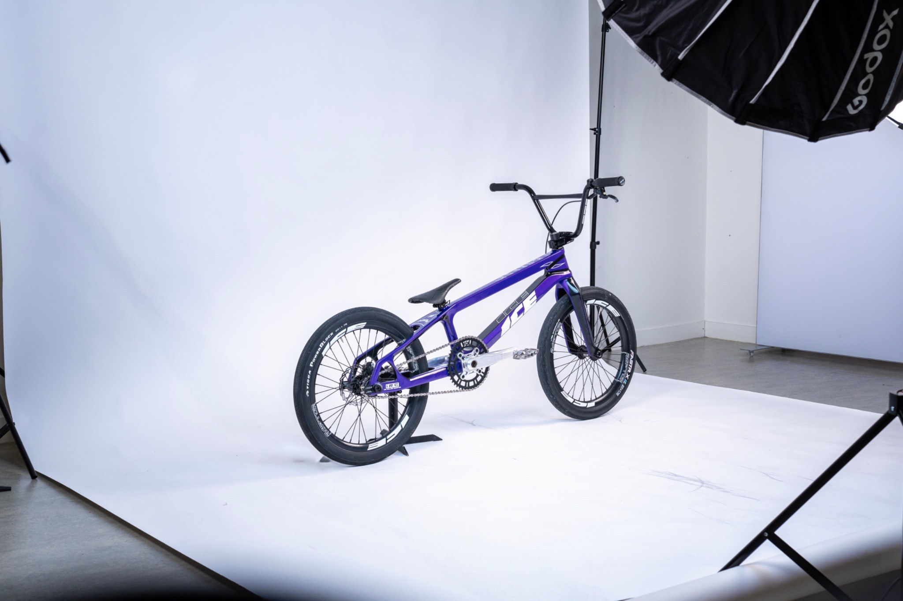
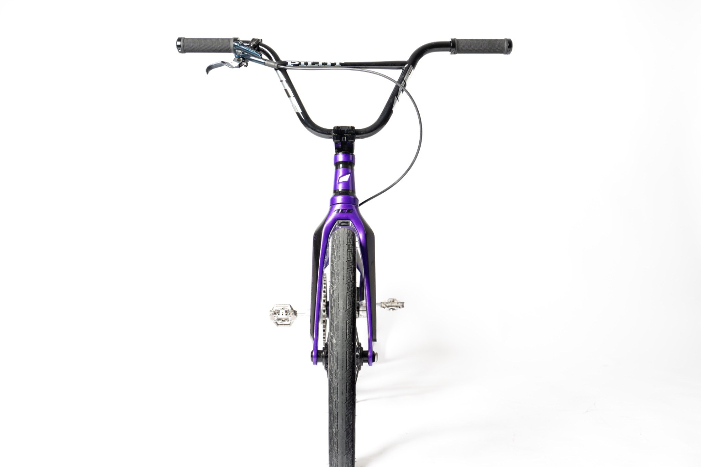
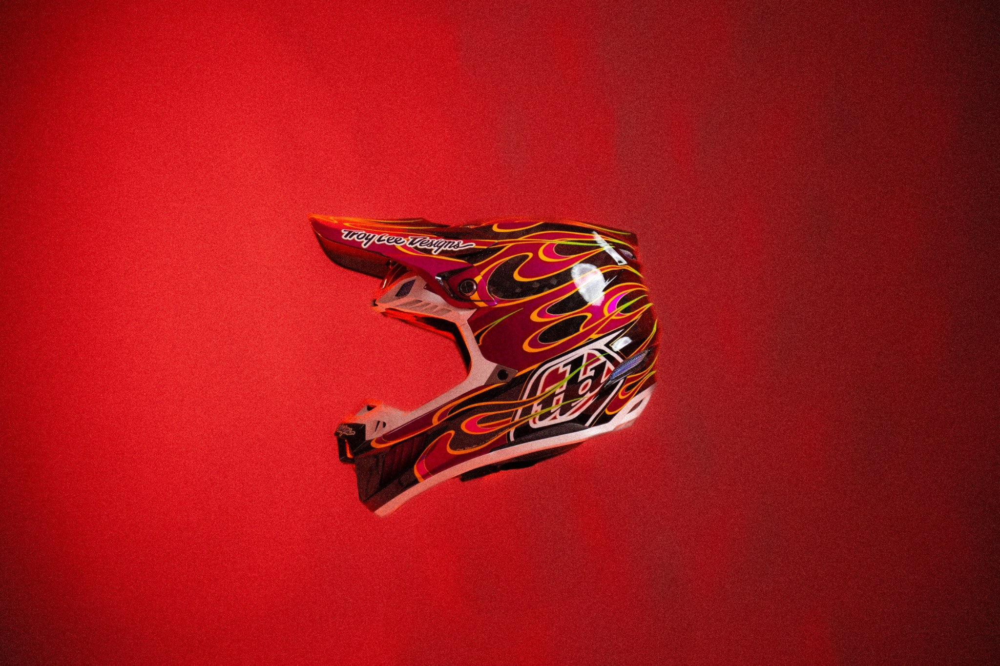
Produits, portraits, événements, communication.
Présentation d’entreprise, produits, interviews, formats courts.
Contenus verticaux pour Instagram, LinkedIn et vos campagnes.
Une production adaptée à vos besoins et à votre identité.
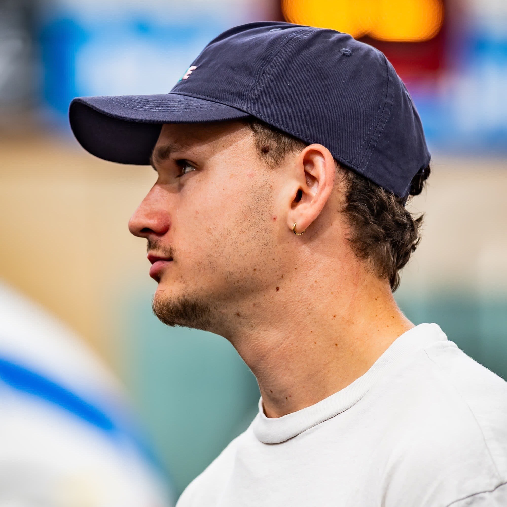
Une saison, un projet sportif et des collaborations à construire avec des entreprises qui souhaitent prendre part à l’aventure.